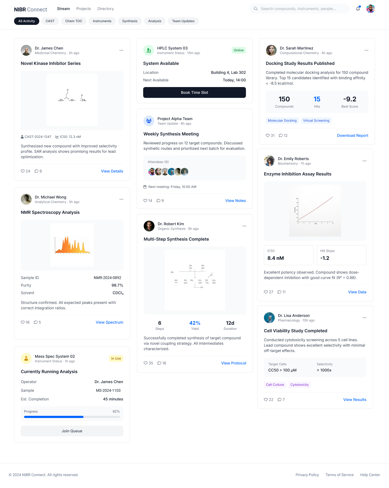
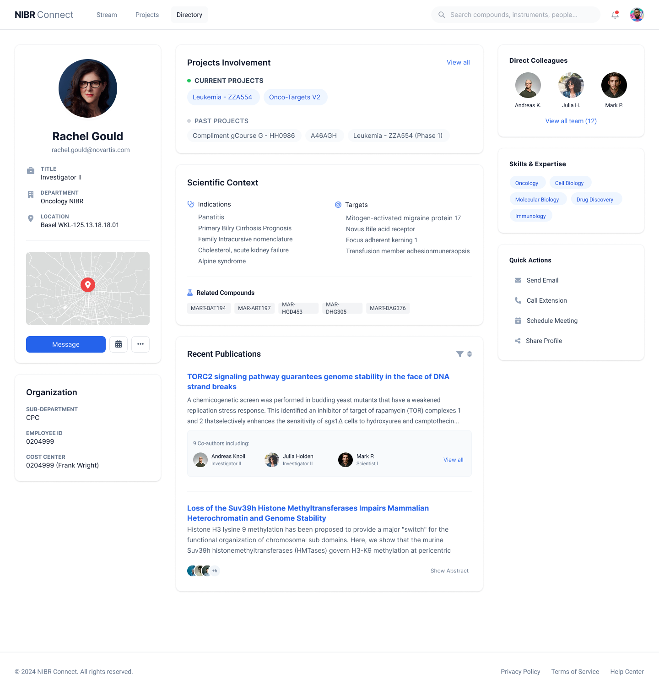
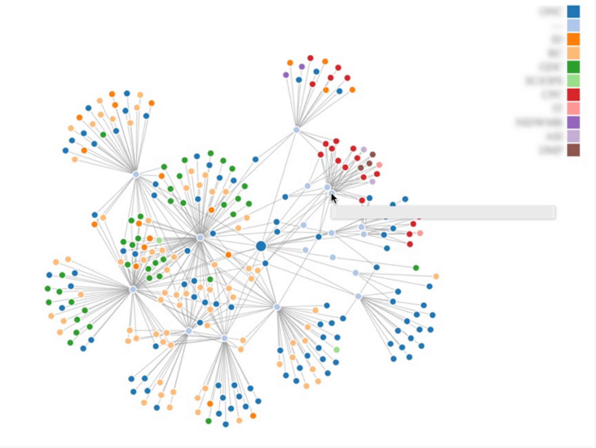
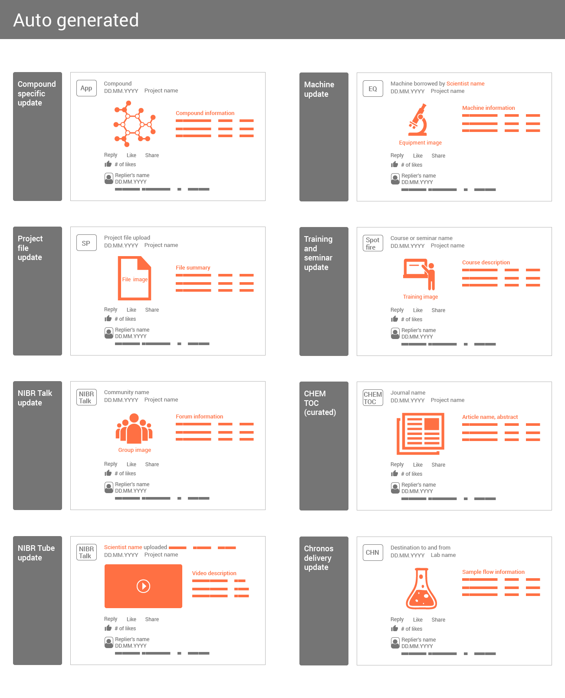
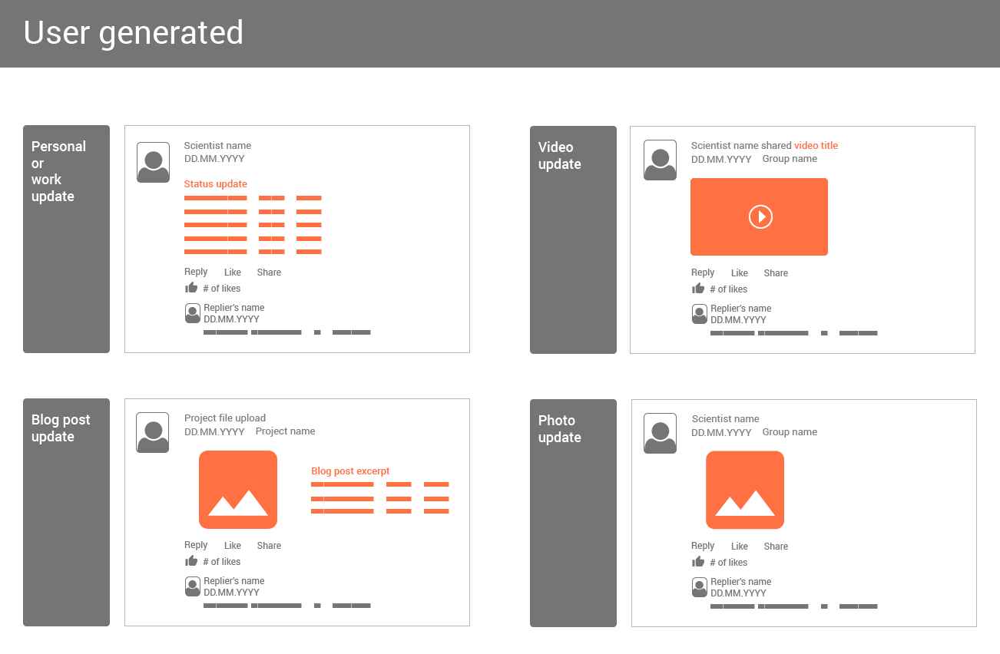

Digital Collaboration Experience for Scientists
Novartis | Basel, Switzerland
Goal
To improve digital tools for scientists at Novartis, improving collaboration and streamlining workflows to make data sharing and research processes more efficient.


Where we started
Scientists across the organization were working with fragmented tools, relying on manual workarounds to share data and coordinate research. Knowledge was siloed across teams and time zones, making it difficult to find expertise, track equipment availability, or stay updated on what colleagues were working on.
Research & Discovery
- Interviews with scientists across multiple departments to understand daily workflows and pain points.
- Surveys distributed globally to quantify the scale of collaboration challenges.
- Contextual inquiry observing scientists in their labs to see how they actually shared information.
- Workshops with cross-functional teams to align on priorities and surface unmet needs.
- Log analysis of existing tools to identify usage patterns and drop-off points.
Design process
Expertise Visualization
Built a D3.js-powered mapping tool to visualize scientist expertise and connections across the organization, making it easier to find the right collaborators for a given research area.

Blurred for confidentiality
Ideation, Sketching & Wireframing
Explored an activity stream concept to give scientists a real-time feed of relevant updates from their teams, equipment, and research areas.

Auto-generated cards

User-generated cards
Prototyping & Testing
Built a working HTML/CSS/JS prototypes and iterated based on direct feedback from scientists, refining the information hierarchy and interaction patterns across multiple rounds of testing.
Activity stream
A real-time feed that surfaces relevant updates from across the organization, giving scientists visibility into equipment changes, new publications, and team activity without switching between tools.
Profile page
Research showed that scientists working across sites in Cambridge and Basel needed better ways to find and connect with colleagues beyond their immediate teams. Each scientist gets a profile that brings together their research focus, publications, lab affiliations, and equipment access in one place, making it easy to discover shared interests and find the right expertise for collaboration.
Impact
- 30% reduction in time spent getting equipment updates.
- Additional resources allocated to the product team based on demonstrated value.
- Strategic leadership alignment on collaboration tools in drug discovery.
Most work at Novartis is under NDA. Shown here is a representative selection.